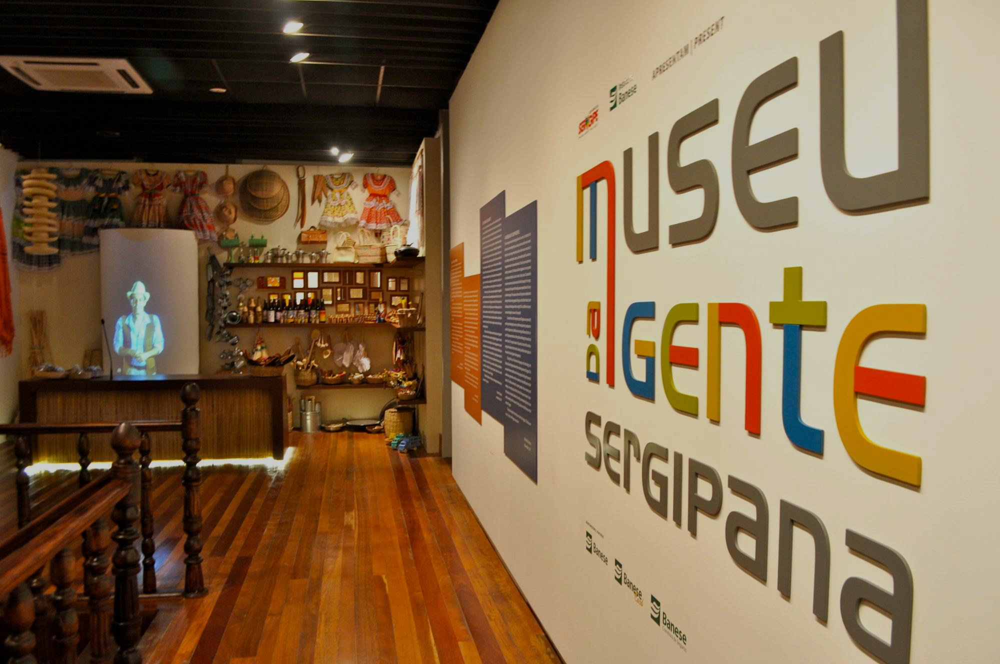

Aracaju
Cultura de Aracaju é rica e diversificada, marcada por festas populares, manifestações artísticas e preservação da cultura negra.
Festas populares:
Carnaval
Quadrilhas juninas
Festejos religiosos, como o dia da padroeira da cidade, em 8 de dezembro
Procissões no mês de janeiro
Estancia
A cultura de Estância, Sergipe, é rica e diversificada, com manifestações como o Carnaval, os festejos juninos e o Ciclo do Fogo.
Festejos juninos
São João Mais Cultural do Brasil, com 31 dias de festividades
Concursos juninos
Ruas enfeitadas
Comidas e bebidas típicas
Exibição de Barcos de Fogo
Homenagens a sanfoneiros locais
Carnaval
Desfiles de escolas de samba
Música, dança e alegria
Celebração da cultura e história da cidade

Laranjeiras
São algumas das manifestações encontradas em Laranjeiras:
Reisado;
Taieiras;
Lambe-Sujos e Caboclinhos;
Cacumbi;
Dança de São Gonçalo;
Chegança;
Samba de Coco;
Quadrilhas juninas
Canidé de São Francisco
A cultura de Canindé de São Francisco, em Sergipe, é marcada por festas religiosas, belezas naturais e histórias do cangaço.
Festas religiosas:
A principal festa cultural é a Romaria de Canindé, em homenagem a São Francisco das Chagas, o padroeiro da cidade.
A festa acontece anualmente nos meses de setembro e outubro, e atrai cerca de 2,5 milhões de devotos.